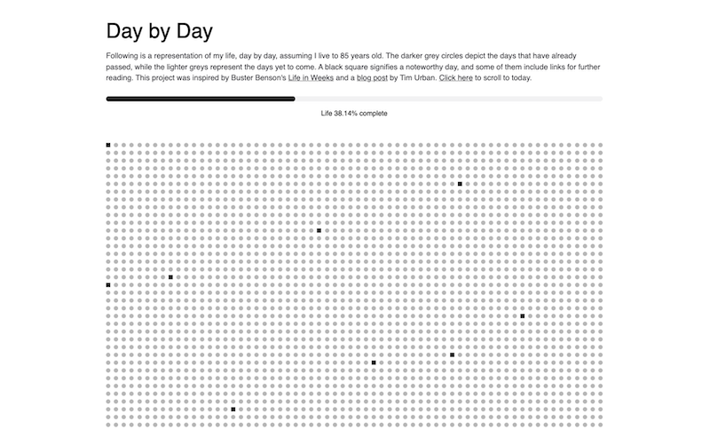

A Day by Day visualisation of life. A memento mori of sorts. 
Day by Day was built in a few hours in an attempt to visualise and come to terms with the finite nature of life. Originally inspired by Buster Benson and Tim Urban, I took their weekly visualisations and went a step further and broke it down into days.
This project reached the front page of Hacker News on launch.